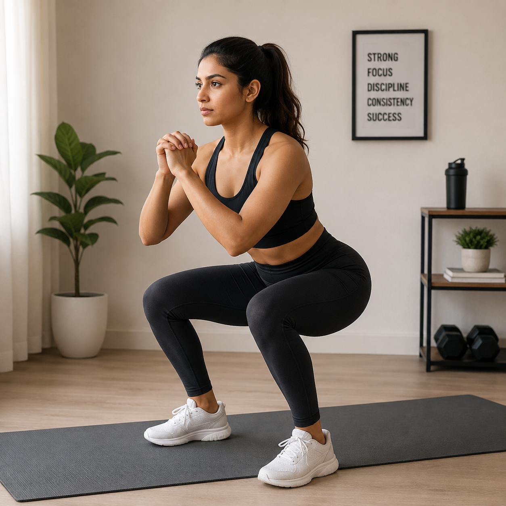

Bodyweight Squat40 sec
Feet shoulder-width apart, sit your hips back like you're lowering onto a chair, then stand back up. Keep your chest lifted.
A 20-minute routine built for people who have genuinely never worked out before — no gym vocabulary assumed, and an easier version of every single move.
You don't need machines to get your body used to moving with purpose. Squats, push-ups, and bridges use your own body weight as resistance, which means the difficulty scales with you — not the other way around. There's also nothing to set up and nothing to put away, so the only decision left is whether you start today or tomorrow.
Most beginner guides skip straight to the workout and leave you guessing what a "circuit" or "set" even means. This one doesn't assume you know any of that — every term gets explained the first time it's used, right where you need it.

Comfortable clothes you can move in, a small clear patch of floor, and a glass of water nearby. A yoga mat or folded towel is nice for the floor moves but not required — a rug or carpet works fine. That's the complete list.
Three short phases: a warm-up to wake your body up, a main circuit that does the real work, and a cooldown to bring your heart rate back down. Use the timer below to move through all three, or just read the routine and go at your own pace.
Do the 5 moves below in order — about 40 seconds of work, 20 seconds of rest, then the next move. Rest a full minute after each round and repeat for 3 rounds if you can. 2 rounds is completely fine for your first time. Every card below has a button to switch to an easier version — use it any time, mid-workout is fine too.

Feet shoulder-width apart, sit your hips back like you're lowering onto a chair, then stand back up. Keep your chest lifted.

Hands on a sturdy table or countertop, walk your feet back so your body forms a straight line. Bend your elbows to lower your chest toward the surface, then push back up.

Lift your knees toward waist height, one at a time, at a steady pace — like a slow jog on the spot.

Lie on your back, knees bent, feet flat on the floor. Squeeze your glutes and lift your hips into a straight line from shoulders to knees, then lower slowly.

Lie on your back, arms reaching up, knees bent at 90°. Slowly lower one arm and the opposite leg toward the floor, then return. Alternate sides.
Twice a week is a strong, sustainable starting point — it gives your body real rest between sessions while you build the habit. Once two sessions a week feels easy, that's your sign to add a third.
Want the full week mapped out, including rest days and when to add a third session?
Beginner Workout Schedule for Home →Repeat this exact routine for the next 1–2 weeks before changing anything. Once it starts to feel easy rather than challenging, that's when it's worth adding light resistance.
Thinking about adding a resistance band or a light pair of dumbbells?
Best Home Workout Equipment for Beginners in India →The biggest ones are rushing through reps, holding your breath, and skipping the warm-up or cooldown. Slow down and focus on control rather than speed. Breathe out on the effort part of each move, like standing up from a squat. And don't skip the 3-minute warm-up — it's short on purpose, but it matters.
Once this routine feels manageable, move on to a full weekly schedule so you know exactly which days to train. When you're ready to add light resistance, an equipment guide can help you choose what's actually worth buying first.
Bodyweight workouts like this one burn calories and, more importantly, build the habit of moving consistently — which matters more for weight loss than any single session. Pair it with a realistic eating pattern and enough sleep for the best results.
Yes. The Dead Bug move in the main circuit targets your core directly, and moves like the Incline Push-up and Glute Bridge also engage your abs to keep your body stable.